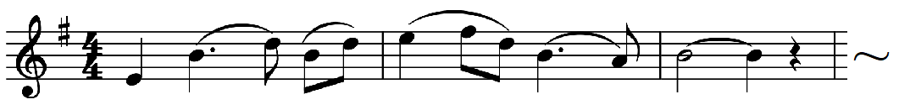
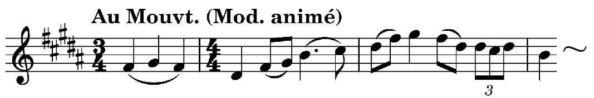
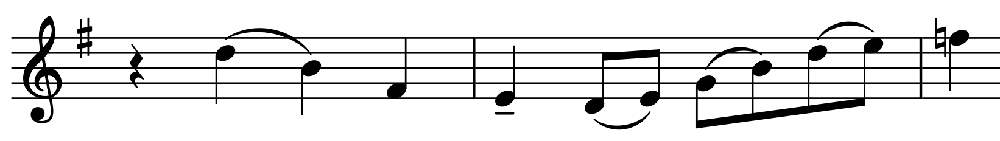
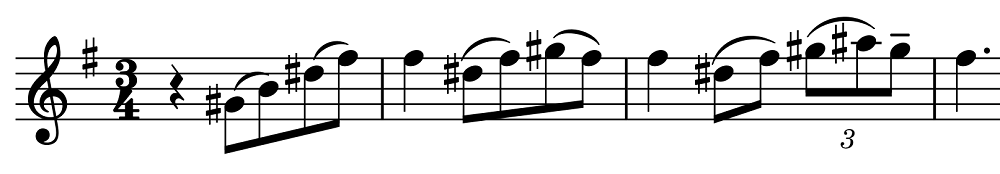

ル・フレム: ピアノ五重奏曲
アレクサンドル・タローの"Le Poète du piano"というアルバムを聴いていたところ、Le Flemという聞きなれない作曲家の曲が含まれていたので調べてみると、1881年生まれのフランス近代の作曲家であるとのこと。なんと103歳まで長生きしていて、没年は1984年、ついこの間ではないか。配信で聴ける曲は少ないようだが、その中で、1909年作曲のピアノ五重奏曲と1905年のヴァイオリンソナタが組み合わされたこのアルバムが良かった。
Paul Le Flem: Piano Quintet in E Minor
Alain Jacquon (pf)
Louvigny Quartet
(2003-2004)
ル・フレムはブルターニュに生まれ、スコラ・カントルムでダンディに師事した。同郷のロパルツに曲を見てもらったこともあったらしい。一方でドビュッシーの『ペレアスとメリザンド』に強い感銘を受け、その影響は時期的にもこの五重奏曲に色濃く出ていると思う。この五重奏曲の冒頭(Lent)でピアノが高音部と低音部それぞれで広いアルペジオの伴奏音型を奏する中から弦が（オクターブ）ユニゾンで主要主題をゆったり歌いだす所は非常に幻想的かつ印象的で、この曲全体の性格を集約していいるかのようである。こちらがその第1主題：

出だしは五音音階(D-E-Fis-A-H)になっている。冒頭はLentだが主部(?)ではやや速いmodérément animéにテンポが変わる。再現においては最初と同じLentで、ユニゾンで奏される。ここに限らず全体的に非常に多くの部分において五音音階が使われている。ロ長調の第2主題（下）もそうで、明るさはあるものの通常のソナタのような強い対比は見られない。なおこの第2主題も、冒頭部で早々に（主調の平行調である）ト長調で現れる。

このほか、何度も現れて弦が歌い交わすように奏でる次の旋律（ラヴェルの弦楽四重奏曲に少しだけ似ている。「温度」は全然違うが）や、

ところどころに3拍子（または5拍子）で挿入される次の旋律も印象的である。

楽譜を追いながら聴くとテンポ・リズムの交替や転調が頻繁で変化に富んでいるのだが、スムーズな変化であって聴くだけだとほとんど気付かないくらいである。作曲者はその微妙な変化を感知して味わってほしかったのかもしれない。
終楽章はリズミカルな7拍子の繰り返し音型が激しさを見せるし、民謡風の（やはり五音音階による）テーマも出てきて賑やかだが、前の2つの楽章ほどには成功していないような気がする。終わり近くにこの民謡風テーマに挟まる形でそれまでに出てきた色々なテーマが回想風に奏される箇所はおもしろく、やりたいことも非常に理解できるのだが……とはいえ、全体を覆う独特の茫洋とした雰囲気に身をゆだねてリラックスして聴くことのできる好ましい、個性的な曲である。演奏もとても素晴らしい。
(May 13, 2023)